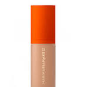
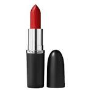
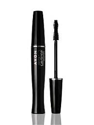

Coisas basicas para iniciar
A base é um dos itens fundamentais na maquiagem, pois ajuda a uniformizar o tom da pele, disfarçar imperfeições e criar um acabamento suave.
Ela oferece uma camada leve de cobertura, proporcionando um visual mais harmonioso e sem manchas.
Além disso, a base também pode ajudar a controlar a oleosidade, manter a maquiagem no lugar por mais tempo e proteger a pele contra fatores externos, como a poluição.
Usar base é uma maneira eficaz de realçar a beleza natural, deixando a pele com aparência saudável e uniforme.
dicas para passar batom
Passar batom é uma maneira simples de realçar os lábios e dar um toque final à maquiagem.
Para aplicar, comece hidratando os lábios com um balm, garantindo que fiquem suaves e sem rachaduras.
Depois, com o batom em mãos, desenhe o contorno dos lábios utilizando o próprio aplicador ou um pincel, para um acabamento mais preciso.
Preencha o interior dos lábios com o batom, aplicando de forma uniforme. Se desejar um look mais definido, use um lápis de boca para contornar antes de aplicar o batom.
Finalize com um pouco de pó translúcido ao redor dos lábios para evitar borrões. E pronto, seus lábios estão prontos para brilhar!
Dicas para os olhos
O rímel destaca os cílios, abrindo o olhar e complementando a maquiagem de forma simples.